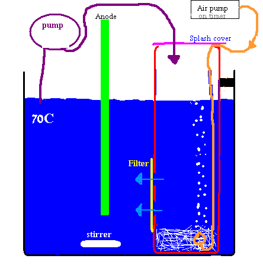
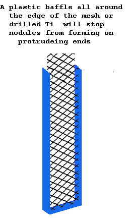

|
There have been a number of different baths proposed for the
electrodeposition (plating) of (Beta) Lead Dioxide but the bath that has gained general
acceptance is the bath containing Lead Nitrate. The Lead Nitrate bath plates well
under the widest range of parameters and is easy to make up. There is rather a lot of contradictory results in scientific literature regarding Alpha
and/or Beta Lead Dioxide being deposited from acidic Lead Nitrate baths, see JES, 149 (9), 2002 . High plating current density gives Alpha, low plating current density gives Beta at Nitric acid levels of 18 to 30g/l (not 100% sure what occurs at lower acid levels). Beta type Lead Dioxide is desired as the outside layer of Anodes though Alpha has been shown to work OK too.
The plating process can be represented by the following overall equation:
| ||||||||||||||||||
HARDWARE.
The Plating tank can be a glass beaker as it is good to be able to
see the Anode plating. Use a good tank as
you do NOT want it to break and spill toxic Lead Nitrate all over the
place. Polyethylene seems to stand up OK. Cable ties become brittle and Silicon sealer deteriorates so do
not use these materials in the tank. A plastic air stone (used for stirring) also failed after a few hours. Silicon tubing holds up OK.
Heater for tank.
This can come in the form of an aquarium heater with it's control altered to let it heat to 70°C. A magnetic hot plate stirrer can be used or other system that will heat the solution to 70°C approx. Test out your system using water first to see how it is working. Polyester cloth can be used as a filter if using a two
tank system.
A DC supply capable of putting out a few Volts and the required plating current is needed. Generally lower plating currents give smoother coats of Lead Dioxide and about 20mA/cm^2 is good for most of the plating run. This current density will give Beta Lead Dioxide from the Lead Nitrate tank. For some ideas on power supplies see Power supplies.
When deciding what plating current to use you simply calculate the surface area
that you have to plate (cm squared) and multiply it by the current density (in
mA/cm squared) you want to plate at. This will tell you the amount of mA that you need
to put into the Anode. You simply adjust the Voltage on the supply to give you
that current. If using the battery charger supply in the link above, you simply attach the required
number of flying Leads to the Anode. A constant current source is good for this
type of application. The Anode is connected to the positive lead.
The Cathodes for
the plating tank can be Copper. Don't use Gouging rods, there are reports that some
Gouging rods contain Iron particles. Iron is NOT wanted in the tank.
The Cathodes surround the substrate that you are
plating and at least two should be used. The surface area of the Cathode(s)
facing the substrate to be plated should be at least half the surface area that
you are plating. Alternatively a spiral of Copper wire can be used surrounding
the substrate or some Copper strips. Distance
between substrate (Anode) and Cathode is not critical and can be of the order of
about an inch or two. There should be no sharp corners or abrupt indents on the Anode
to be plated.
Nitric acid and Lead ion concentration control.
Nitric acid is formed as plating progresses. To stop the concentration of Nitric acid from becoming too high you must have a suitable large tank (if using a one tank system) If using a two tank system with a pump, then the total plating solution volume need not be so large. You must add neutral solution to the plating tank at the appropriate rate.
HNO3 g/l | pH |
| 1 | 1.8 |
| 2 | 1.5 |
| 4 | 1.2 |
| 6 | 1.02 |
| 8 | 0.9 |
| 10 | 0.8 |
| 12 | 0.72 |
| 14 | 0.65 |
| 18 | 0.54 |
| 22 | 0.46 |
| 30 | 0.32 |
| 38 | 0.22 |
| 50 | 0.1 |
| 100 | -0.02 |
The pH of water and Nitric acid can be calculated from this page. pH values corresponding to Nitric acid amounts per litre of water are given in the table (as per calculator at link) and they correspond to actual measured values of pH when Nitric acid was added to a Lead Nitrate solution of 340 grams per litre. The molarity of 70% HNO3 is 15.6 and it's density is 1.42 g/cc.
The amount of Lead ion per gram of PbO2 is 0.839 grams. The amount of Lead ion per gram of Lead Nitrate (Pb(NO3)2) is 0.6256 grams. Therefor each gram of
deposited Lead Dioxide will use up 1.341 grams Lead Nitrate. The concentration of Lead Nitrate should not be let fall below 200g/litre. If the tank size is large enough to keep the Nitric acid concentration at reasonable levels then Lead Ion depletion of the plating solution will not be a problem. It is advantageous to have the Lead ion and Nitric acid concentration as constant as possible during plating.
When going for a one or two tank system and adding Lead Compound as plating progresses, the total plating solution volume need not be as large as when using a one tank system with no addition of Lead Compound.
If using a one tank system and adding Lead compound you will need to add the amounts in the table below
Each mole of Electrons (26.8 ampere hours) that flows will produce one mole Nitric acid (63 grams), assuming 100% current efficiency, which is equal to 2.35 grams Nitric acid forming per hour per amp.
Another way to look at this is to say that a half mole of Lead Dioxide is plated onto the Anode per 26.8 ampere hours, (119.6 grams Lead Dioxide per 26.8 ampere hours) which is equal to 4.462 grams Lead Dioxide per amp per hour. You need to add Lead compound to replenish the transfered Lead Ions and depending on the Lead compound you are using the weight added will need to equal the molar amounts of Lead Ion being transfered. The table below gives the relevant molecular weights of the Lead compounds that are used and thus the amounts to add to the tank per amp per hour. This amount of addition will keep the extra acid generated neutralized as well. This is the rate at 100% CE.
| Compound | Grams of compound to add to tank per amp per hour @100% CE |
| Litharge (molecular weight = 223) | |
| Lead Carbonate (molecular weight = 267) | |
| Basic Lead Carbonate (molecular weight = 775) |
The addition of Carbonate or Basic Carbonate will cause problems with foaming, bubbles and floating. A slurry of these compounds may have to be made (by adding some of the compound + some neutral plating solution to a well capped container and shaking) in order stop them floating on the surface of the plating solution. Lead Carbonate comes in a large array of molecular weights so check what you have.
It may be possible to have an excess of Litharge at the bottom of a one tank system (if stirring is not used or perhaps intermittent stirring) which will react fairly slowly with the Nitric as it is produced and help keep the Lead ion concentration constant and the Nitric acid concentration in the wanted range. If the Litharge is too finely divided (small particle size) it may react too easily with the Nitric acid and be inclined to keep the pH of the bath too high (concentration of the Nitric acid will be too low). You cannot use Lead Carbonate or Hydroxide or Basic Lead Carbonate in excess in the one tank system as they will keep the pH too high (they react too readily with the Nitric acid formed) and the Carbonate will also cause bubbles/foaming as it reacts with the acid. See here for some observations regarding addition of Lead compounds to the tank.
From US Patent No. 4,130,467, we have Litharge addition rates of 4 grams per amp per hour in one example and 3.5 grams per hour per amp in another example. The additions were made every two hours. They used a six litre tank in the second example which gives an idea of tank size/deposition rate between each addition of Litharge. It is next to impossible to get a figure for surface area they were plating.
|  | When using a two tank system with Lead Dioxide deposition being performed in one tank and an excess of neutralizing Lead compound in the other tank (more neutral solution), then you must pump the more neutral liquid into the plating tank at the appropriate rate to keep Nitric acid at the desired concentration and keep Lead ion replenished.
The amount you need to pump out of the Plating tank into the Neutral tank has been found from experience to be in the region of 17ml per Amp per minute. The pH in the more neutral tank will stay in the region of pH = 3.5 (thats what it did with the Pb Carbonate I had anyways) with the pH in the Plating tank staying around one.
It should be noted that no solid Lead compounds should be allowed to come across from the neutral tank or the pump rate will need to be reduced by a large amount. The simple arrangement shown works as a two tank system with a very simple pump based on an aquarium air pump to keep the more neutral tank stirred. A magnetic stirrer bar would be better. Stirring of some sort is necessary. Careful of spray, use covers. A peristaltic pump on a timer serves well to pump fluid from the Plating tank to Neutralizer tank. Half inch holes in the Neutral tank covered with a wrap around cloth serve as a return path for the fluid. The tank can be set up first using a solution of (say) Ammonium Nitrate at a density of approximately 1.3 grams per cc and a temperature of 70C to ascertain pumping rates/times etc. Perspex beads can be added to the tank and if vigorous stirring is used they will keep bubbles swept off the forming Anode. Stirring of some sort is required in the plating tank. Floating some polystyrene in the plating tank can help lessen evaporation which can be a nuisance. Don't use cable ties, or anything made from Nylon, in the plating tank as they turn brittle and break after 24 hours or so. |
There is a useful Microsoft Excell spreadsheet (in a .zip file) here that can be used for calculations regarding the Lead Nitrate plating tank.
Formation of Nitrites
It appears from some Lead Dioxide plating runs that Nitrites are not a problem if a few grams of Minum (Pb304, red Lead) is put into the Neutralizer tank though it may give LD Anodes that give low CE%?.
See here for some discussion.

Lead Dioxide is inclined to grow on protruding edges giving 'molars' of Lead Dioxide that are not suppored by any Ti substrate. They are inclined to fall off after some weeks or months of operation of the Anode. They should be avoided as they shorten the life time of Anodes, waste plating time, waste chemicles and give an Anode that gets smaller in surface area as the nodules fall off. The diagram shows a plastic baffle placed at the substrate edges to stop this phenomena.
If using drilled Ti as the substrate it is a good idea to spend some time shaping the substrate and perhaps serrating the edges as shown in the diagram.
During plating some Copper will be deposited
onto the Cathodes and if the blue colour of the plating solution gets weak, add more Copper Nitrate. You can add Copper Carbonate to the neutralizer tank to help keep Copper concentration high enough.
There will also be some bubbles on the Anode that are not
welcome but are inevitable. Addition of Perspex beads together with stirring is a great help at keeping bubbles swept off the Anode if stirring is aggressive enough.
Plating current should not be interrupted.
Weigh the Anode substrate before plating so that you will know how much
Lead Dioxide was electro-deposited for calculating plating CE etc.
Keep an eye on evaporation from the tank as it can lower the level of
electrolyte in the tank and leave you with a shorter than expected
Anode. Some polystyrene beads floating on the liquid surface would help to reduce evaporation.
It is a very good practice to test the tank
using a small piece of Graphite about one inch or so at about
20mA/cm^2 and see that the plating is good. If the tank will not plate
Graphite there is a problem with it. Keep Gouging rods away from the tank.
Ions that are bad news in a plating tank, according to the literature, are Chloride (US 3,463,707), Iron (US 3,463,707 & 4,038,170), Cobalt, Selenium and Arsenic.